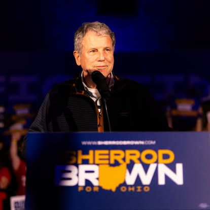

Democratic Candidate Sherrod Brown Fights for the Working Class

Who is Sherrod Brown?
This election season, Sherrod Brown is running to represent Ohio in the U.S. Senate. Previously, Brown represented the state in the Senate but lost reelection in 2024. Brown was born in Mansfield, Ohio, graduated from Yale University in 1974 with a bachelor's in Russian Studies, and earned a graduate degree in education from Ohio State University. He also served in the House of Representatives from 1975-1982 and as Ohio Secretary of State from 1982-1990. This November, the race between Brown and incumbent Jon Husted (R) is especially close, with many considering Ohio a battleground state.
Sherrod Brown’s campaign focuses on issues that impact working class people. For example, he aims to improve the cost of living, healthcare, data centers, climate change, and protecting veterans.
Data Centers
Ohio has been a hot spot for data centers since 2010, and Sherrod Brown plans to be tough on them. He is asserting that data centers will have to pay their utilities so residents bills don't increase. This issue will play a big role in the election. 3% of voters in Ohio said that AI and data centers were their top concern in this election, according to a New York Times/Siena poll.
Climate Change
Data centers impact the environment, and while Brown has not provided updated, specific goals for addressing the environmental and climate consequences of AI data centers, his record shows support for environmental issues and climate change. A 2024 article explained that when he sat on the Senate banking committee, he held a hearing on the economic risks of climate change and supported environmental protections and clean energy.
Healthcare
Sherrod Brown believes that health insurance companies should be held accountable. Brown said, “it’s time to ban health insurance companies from denying the care your doctor says you need. And if they try to deny your claims, we’ll fine them,” according to his campaign website. Most recently, he hosted a roundtable discussion with community members on healthcare issues. He said that if elected, transparency would be a top priority so constituents can get the care they need and stop seeing big corporations make more money while they continue to struggle.
Protecting Veterans
Sherrod Brown met with constituents earlier this summer to share his goals of protecting veterans' benefits and, more specifically, putting people over large corporations. In 2022, he supported the Promise to Address Comprehensive Toxics (PACT) Act, which helps veterans get healthcare if they were exposed to toxins. Since then, over 32,000 Ohio veterans have received care.